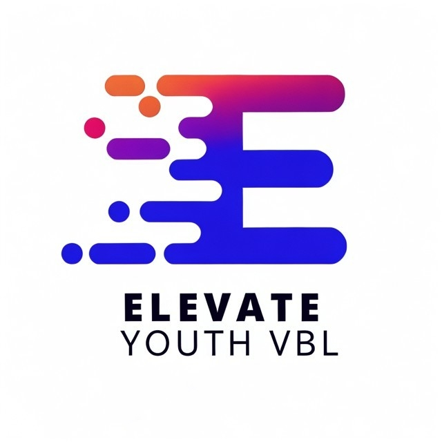
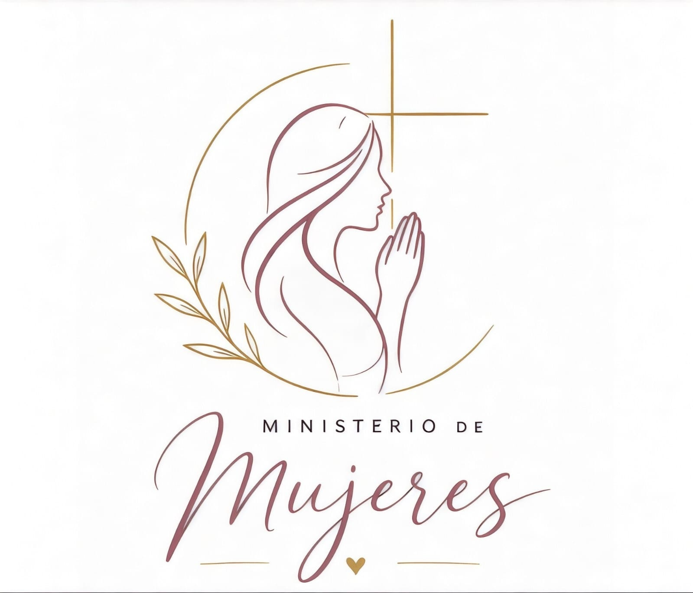
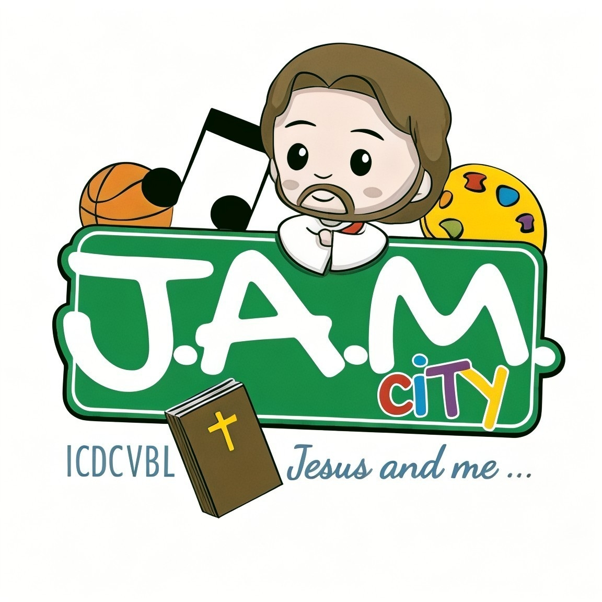
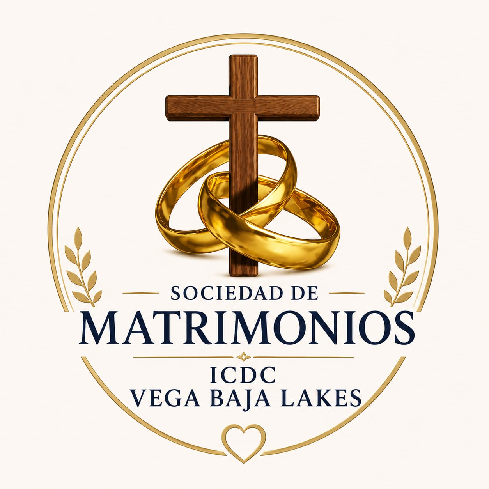
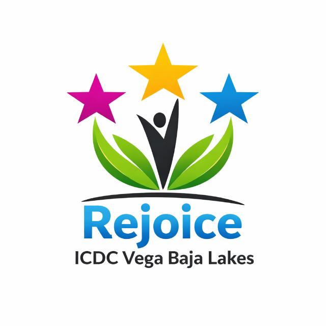

Elevate YOUTH
Ministerio para jóvenes y jóvenes adultos que desean crecer en fe, propósito y comunidad.
Instagram
Ministerios y Eventos
Jóvenes, mujeres, niños, juveniles, matrimonios, oración y eventos para crecer juntos.
Ministerios
Estos ministerios crean espacios seguros y claros para jóvenes, mujeres, niños, juveniles, matrimonios, tercera edad y toda persona que desea crecer en comunidad.

Ministerio para jóvenes y jóvenes adultos que desean crecer en fe, propósito y comunidad.
Instagram
Espacio de oración, acompañamiento y crecimiento espiritual para las mujeres de la iglesia.

Ministerio infantil y juvenil para niños de todas las edades. Reuniones cada domingo a las 10:00 AM.

Comunidad para matrimonios que desean fortalecer su relación, crecer juntos y edificar su hogar en Cristo.

Ministerio para adultos mayores que fomenta comunión, cuidado espiritual y una vida plena en Cristo.
Acompañamiento pastoral, petición de oración y cuidado espiritual para la congregación y visitantes.
Enviar peticiónOportunidades para servir, compartir y edificar a otros como familia de fe.
Planificar visitaReuniones y actividades para adorar, aprender y conectar durante la semana.
Ver calendarioCalendario base